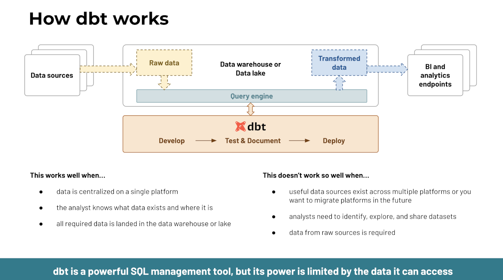

In this series, we demonstrate how to build data pipelines using dbt and Trino with data directly from your operational systems. They can use a variety of sources including relational databases, NoSQL databases, and other systems. The resulting data is stored in the data lake using the open source Iceberg table format.
The series is centered around a data-driven e-commerce business. This business is optimizing its revenue based on customer behavior. Their architecture consists of a PostgreSQL database driving the e-commerce processes on their website, and an Elasticsearch database gathering all customer behavior on their website in the form of clickstream data.
The webshop has all the typical entities and data points such as users, sessions, products, categories, carts, orders, payments, and deliveries.
The clickstream contains information about every click performed by every user on the webshop and its affiliate websites.
In the series, you learn how to set up dbt and Trino, and start using it to solve real business cases. You set up reports that offer insights on improving the customer journey. For example, a report to show sales by channel or a report with referral traffic to determine which channel is most effective to attract new sales.
Why dbt?
dbt™ is a transformation workflow that lets teams quickly and collaboratively deploy analytics code following software engineering best practices like modularity, portability, CI/CD, and documentation. Anyone who knows SQL can build production-grade data pipelines.

Why Trino?
Trino can read data from numerous data sources, and supports writing to modern table formats such as Iceberg. SQL support and high performance enable these data federation capabilities of Trino to make all your data instantly available without the need to copy it into a proprietary data format.
Why Iceberg?
Iceberg brings a lot of the ACID goodies from relational databases to the lakehouse table.
- Instead of using proprietary data formats inaccessible by other tools, your data is stored in open formats like Parquet, ORC, or AVRO files, and is immediately accessible through a multitude of tools like Pandas, Dask, Spark, and Trino.
- Iceberg enables fast querying as it knows how your data is organized with its support for partitioning, bucketing and other improvements.
- Iceberg allows for flexibility such as adding or removing columns through schema evolution.
- Iceberg allows for time travel on your data. It offers you a way to see how your data looked at a particular point in time or even revert it to an earlier state through the concept of snapshots.
Roadmap
In this series, you can learn how to set up Trino and dbt for fast and solid data pipelines including machine learning use cases:
- Setting up Trino for dbt - Register all your data sources to immediately start using them in your data pipelines.
- First dbt-trino data pipeline - Learn how to set up dbt and create your first dbt data pipeline.
- Refresh your data faster using incremental models - Instead of loading all your data every time dbt runs, learn how to use incremental refresh to reduce spent and compute time.
Target audience
This series is targeted at analytics engineers and data engineers who would like to improve their data pipelines with dbt and Trino tools. The beginner friendly tutorials enable you to use the federation and lakehouse architecture capabilities of Trino, and cover several aspects like setting up a Trino instance locally with all underlying data sources, presenting how to use dbt with Trino, and many more advanced features of dbt.
Demo repository
All files and code referenced in the article is available on GitHub. Clone or fork the repository https://github.com/starburstdata/dbt-demo to follow along and explore capabilities of dbt and Trino.